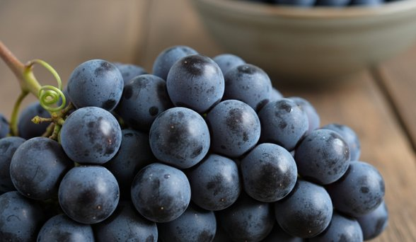

Japanese fruits,
exceptional by nature.
Grown with precision. Selected with care. Presented as nature intended. Experience the finest Japanese fruits, renowned for their purity, flavour and beauty.
Our collection
Discover Japanese favourites
From iconic melons to delicate berries, explore our hand-picked selection of in season Japanese fruits.
View luxury gifts
Crown Melon
View online

Pione Grapes
View online

Miyazaki Mango
View online

Fuyu Persimmon
View online
Japanese fruit
The finest in
the world.
In Japan, gifting fruit is a deeply rooted tradition expressing high respect and gratitude.
These fruits are hand-grown with meticulous care to achieve flawless shapes, perfect sweetness and uniform colouring.
They are elegantly boxed and presented like fine jewellery or vintage wine.
It's always such a pleasure seeing customers go from unconvinced to
completely in awe after trying our Pione Grapes.
No need to go to Harrods, we have a selection of highly sought after Japanese luxury fruits right here!
From Crown melons selling at £115 each to Miyazaki mangoes – a pair of which sold at auction for £4,000.
The Crown Melon is a hand-massaged, single-stem musk melon grown in Hokkaido or Shizuoka,
famous for its perfectly round shape and rich melt-in-your-mouth sweetness.
The Pione Grape is highly prized in Japan, frequently gifted in elaborate, cushioned boxes.
The Miyazaki Mango also known as Taiyo no Tamago meaning Egg of the Sun,
is a ruby-red mangoes, classified by hitting a strict weight and sugar thresholds.
It is highly prized for its intensely sweet,
almost candy-like flavour, completely fibreless flesh, and a creamy, melting texture.
The Fuyu Persimmon is a traditional autumn fruit given for its crisp, sweet and non-astringent flesh.
Japanese fruits
Muskmelons
What makes them so special?
Cultivation
Grown in temperature-controlled greenhouses, farmers prune each
plant to channel all its nutrients into a single, perfect melon.
Melons are massaged and rotated to ensure even, symmetrical netting and shape.
Flavour profile
They are incredibly juicy and sweet with a rich, melting texture.
Despite their green skin and pale flesh (which resembles an unripe honeydew),
they deliver intense, sweet flavour.
Premium varieties
Well-known regional brands include Shizuoka Crown Melons,
Hokkaido Yubari Melons and Ryoma Melons from Kochi.
Cultural significance
Presenting a flawless muskmelon is a highly appreciated
gesture of deep respect, akin to gifting vintage wine in Western cultures.
Key characteristics
The “T" Stem
Premium melons like the Crown Melon are harvested with a small,
T-shaped section of the vine attached, which ensures the fruit ripened naturally.
Intricate netting
The outer rind features a raised, lace-like pattern.
The more uniform the netting, the higher the grade of the melon.
Flesh and flavour
The flesh can be orange (like the Yubari King) or pale green (like the Crown Melon).
They are extremely juicy, with a sugar content often reaching 14-16% on the Brix scale.
Ripeness
You can test for peak ripeness by lightly pressing the bottom-most part of the melon.
It should yield just slightly before chilling and slicing.
The Pione Grape
Pione grapes are highly prized in Japan and are frequently gifted in elaborate, cushioned boxes. Often called “Black Pearls”, they are sought after for their massive, deep purple berries, incredibly high sugar content and a juicy, gelatinous texture with refreshing muscat undertones. Most Pione grapes sold today are the seedless “New Pione” variety, achieved using a natural gibberellin treatment. They are primarily cultivated in Japan’s Yamanashi, Nagano and Okayama prefectures. Because of their labour-intensive cultivation and strict quality controls, they are treated as luxury fruit. For the best tasting experience, they should be chilled in the refrigerator, peeled before eating, and are popular both fresh and incorporated into premium Japanese desserts like mochi and fruit tarts These grapes are truly amazing. Your taste buds will go wild!
The Miyazaki Mango
Miyazaki mangoes are prized for their intensely sweet, almost candy-like flavour, completely fibreless flesh, and a creamy, melting texture. Often compared to high-end fruit jellies, they pack a rich, tropical fragrance with a perfect balance of sweetness and minimal acidity.
The Miyazaki experience
Grown in Japan under highly regulated greenhouse conditions, this luxury “Egg of the Sun” mango offers several distinct characteristics.
Texture
The golden-yellow flesh is remarkably smooth, creamy and practically melts in your mouth.
Flavour profile
They are incredibly sweet (often exceeding 15 degrees Brix),
delivering a rich, citrusy and floral flavour with almost no tartness.
Aroma
They carry a distinct perfume that is noticeable as soon as the fruit is sliced.
Grown in Japan's Miyazaki Prefecture, farmers wrap individual mangoes in
nets to ensure they naturally detach when perfectly ripe.
Only about 10% meet the strict Taiyo no Tamago (“Egg of the Sun”)
criteria for weight, flawless skin and sugar content.
The price is driven by several strict agricultural and cultural factors:
Meticulous cultivation
Trees are grown in climate-controlled greenhouses with
carefully monitored ventilation and temperature.
Each fruit is manually massaged and rotated to ensure even,
vibrant red colouring.
Strict quality standards
To earn the premium classification, every mango must weigh at least 350 grams,
possess a sugar content of 15% or higher
and have a deep, vibrant red skin with zero blemishes.
Luxury gifting culture
In Japan, flawless fruits are highly sought-after as luxury
gifts for business associates or special occasions.
Premium specimens are frequently sold at wholesale auctions,
with record pairs fetching up to 500,000 yen (roughly $4,000).
High scarcity
The extensive effort required to produce
these fruits ensures the yield remains extremely limited.